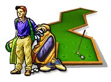

 Игры от Алавар / Alawar
Язык интерфейса: русский
Размер игры: 22.1 мб
Попади мячиком в лунку за минимум ударов.
Описание:
Гольф - это старинная забава, которая зародилась в XIV веке в горах Шотландии. Ее придумали пастухи, коротавшие время, загоня посохами небольшие камни в кроличьи норки. Эта игра оказалась настолько увлекательной, что вскоре шотландские вельможи запретили ее, чтобы гольф не отвлекал солдат от военной службы. В современном виде игра появилась в XIX веке все в той же Шотландии, и с тех пор ее правила практически не менялись.В спортивном симуляторе”Мини Гольф” вас ждет ”комнатный” вариант этой игры, которая прекрасно развивает спокойствие и хладнокровие - главные качества профессионального гольфиста. Впереди - 6 кампаний по 9 эпизодов в каждой. Как и в большом гольфе, задача игрока проста - нужно как следует прицелиться, рассчитать расстояние до цели, и - удар! Не стоит переживать, если мячик улетел не туда - первый блин частенько выходит комом. Но с каждым ударом вы будете все лучше чувствовать движение мяча, точнее оценивать дистанцию. На каждом из 54 уровней вам нужно провести мячик к заветной лунке. Для этого придется преодолевать многочисленные горки и спуски, коварные ловушки, трамплины и многие другие препятствия. В " Мини Гольфе” вас ждет два игровых режима. В режиме”Корт” на прохождение каждого уровня отводится определенное количество ударов. Если превысить этот лимит - то уровень придется проходить заново. Во втором режиме -”Кампания” - такого ограничения нет, но если использовать слишком много ударов, то о призовом месте в таблице рекордов и карьере профессионального гольфиста придется на время забыть. Эта увлекательная компьютерная аркада с элементами логической головоломки придется по вкусу абсолютно всем гольфистам, ведь развивать глазомер и внимание полезно в любом возрасте. Как опытные, так и начинающие спортсмены по достоинству оценят превосходную трехмерную графику и качественное звуковое сопровождение этой игры.
Скриншоты: